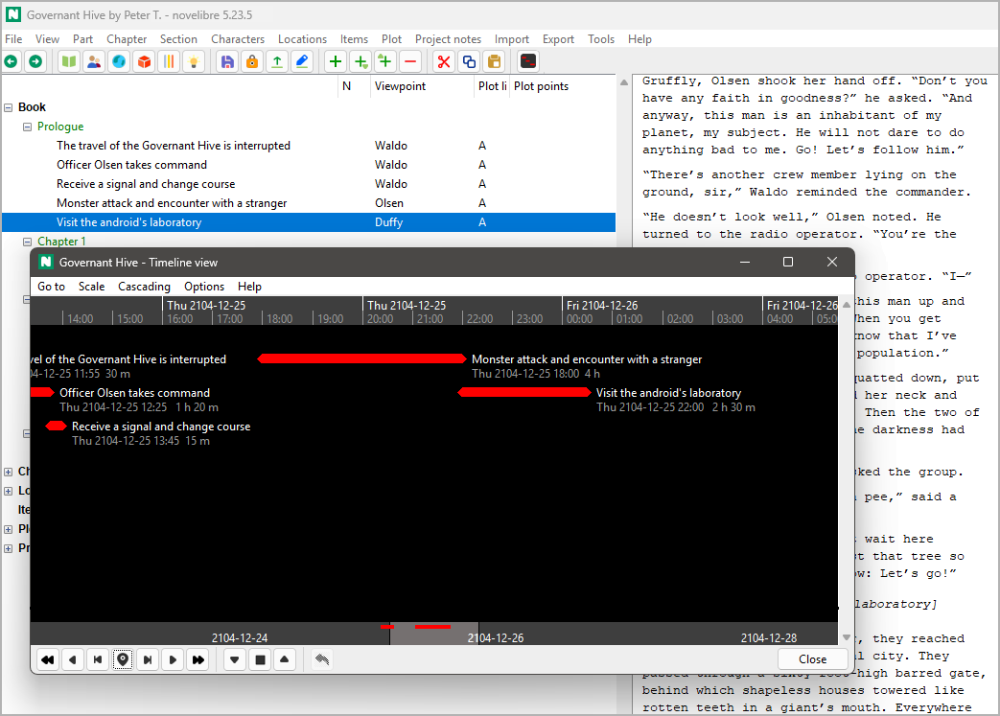

nv_tlview
User guide
This page refers to the latest nv_tlview release.
You can open it with Help > Timeline view Online help or with F1.
nv_tlview is a plugin providing a timeline view with sections that are given a narrative date/day and time.
The plugin adds a Timeline view entry to the novelibre Tools menu, and a Timeline view Online help entry to the Help menu. The Toolbar gets a button.
Operation
Start the Timeline view
Open the Timeline view either from the main menu: Tools > Timeline view,
or via the button in the toolbar.
Mouse scrolling
Scroll the timeline horizontally with
Shift-Mousewheel.Scroll the timeline vertically with the mousewheel.
Scroll the timeline in any direction by right-clicking on the canvas and dragging the mouse.
Increase or reduce the time scale with
Ctrl-Mousewheel.Change the distance limits for stacking with
Shift-Ctrl-Mousewheel.
Selecting a section in the novelibre project tree
Select a section by double klicking on a timeline marker. This will bring the novelibre application window in the foreground.
Shifting a section in time
Hold down the
Shiftbutton and click on the timeline marker, then drag it with the mouse. This will move the section forward or backward in time while keeping the duration.
Shifting the section end
Hold down the
CtrlandShiftbuttons and click on the timeline marker, then drag it with the mouse. This will increase or decrease the section’s duration while keeping the start date/time.
Hint
Shifting operations with the mouse can be aborted with the
Esckey before releasing the mouse button.Shifting operations with the mouse can be undone with
 .
.
Command reference
Buttons in the footer toolbar
 Go one page back
Go one page backShift the timeline to go about one screen width back in time. Same as the “back” mouse button (Windows).
- Scroll back
Shift the timeline to go 1/5 screen width back in time. You can move it more precisely with the mouse wheel.
 Go to the first section
Go to the first sectionShift the timeline so that the earliest section is positioned near the left edge of the window.
- Go to the selected section
Shift the timeline so that the section selected in the novelibre project tree is positioned in the center of the window.
 Go to the last section
Go to the last sectionShift the timeline so that the latest section is positioned near the right edge of the window.
 Scroll forward
Scroll forwardShift the timeline to go 1/5 screen width forward in time. You can move it more precisely with the mouse wheel.
 Go one page forward
Go one page forwardShift the timeline to go about one screen width forward in time. Same as the “forward” mouse button (Windows).
 Reduce the time scale
Reduce the time scaleReduce the time scale in major steps. Fine scaling is meant to be done with the mouse wheel.
 Fit to window
Fit to windowThis sets the scale and moves the timeline, so that all sections with valid or substituted date/time information fit into the window.
 Increase the time scale
Increase the time scaleIncrease the time scale in major steps. Fine scaling is meant to be done with the mouse wheel.
- Undo the last change
This restores date/time/duration before the last mouse operation on a section.
Caution
Interim changes to date/time/duration on the same section via the section properties in novelibre may get lost.
- Close
Close the timeline viewer window. Same as
Ctrl-Q(Linux) orAlt-F4(Windows).